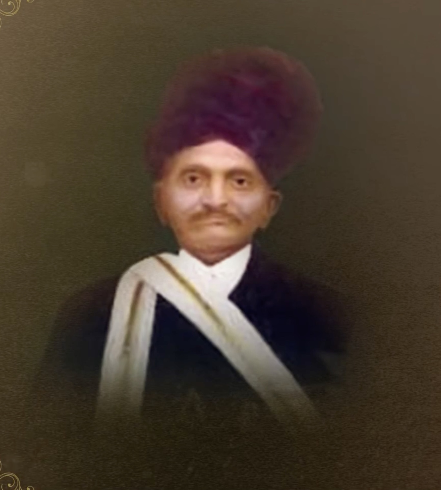

Mokshmala was composed by Param Krupalu Dev at the age of 16 years and 5 months, in just 3 days, at the house of Vanechand Popatbhai Daftary in the Chaitra month of V.S. 1940 (1884 AD). The work comprises 108 chapters containing stories drawn from the Jain Agams (primarily from the Uttaradhyayana Sutra), along with dos and don'ts and philosophical discourses. It is arranged in three sections: Samyag Darshan, Samyag Jnan, and Samyag Charitra. The chapters are notably concise in their exposition.
Shri Vanechand Popatbhai Daftary

Shri Vanechand Popatbhai Daftary
| Shri Vanechand Popatbhai Daftary | |
|---|---|
| Also known as | Vinaychandrabhai Popatbhai Daftary |
| Native place | Morbi |
| Relation | Contemporary and companion |
| Notable work | Wrote book Sakshat Saraswati recording avdhan demonstrations |
| Significance | Mokshmala composed at his house; gave letter of recommendation for Sheth Jesangbhai |
Shri Vanechand Popatbhai Daftary (also known as Vinaychandrabhai Popatbhai Daftary) was a contemporary and companion of Param Krupalu Dev from Morbi. He authored the book Sakshat Saraswati, which recorded Param Krupalu Dev's avdhan demonstrations. Param Krupalu Dev composed the Mokshmala at his house at the age of 16 years and 5 months. He also provided Param Krupalu Dev with a letter of recommendation for Sheth Jesangbhai, which ultimately led to Param Krupalu Dev's first meeting with Pujyashree Juthabhai in Ahmedabad.
Composition of Mokshmala
Printing of Mokshmala
At age 20, in V.S. 1944 (1888 AD), Param Krupalu Dev wished to publish the Mokshmala but did not have the funds to do so and had to collect money. Nancybhai of Veraval sponsored some of the funds. Param Krupalu Dev decided to go to Ahmedabad, where printing was cheaper than in Mumbai, but He did not know anyone there.
Vanechand Popatbhai Daftary then wrote a letter of recommendation addressed to Sheth Jaisinghbhai Ujamsingh, the elder brother of Pujyashree Juthabhai. The letter described the bearer as a truly scholarly person and a Shatavdhani — a title that commanded enormous respect at the time — and requested that Jaisinghbhai help him in any way possible.
Param Krupalu Dev took this letter and went to Ahmedabad. However, Jaisinghbhai, being occupied with his business, directed his younger brother Pujyashree Juthabhai to assist the young visitor. This is how Param Krupalu Dev and Pujyashree Juthabhai met for the first time in this lifetime — an encounter that would become one of the most significant spiritual relationships in Param Krupalu Dev's life.